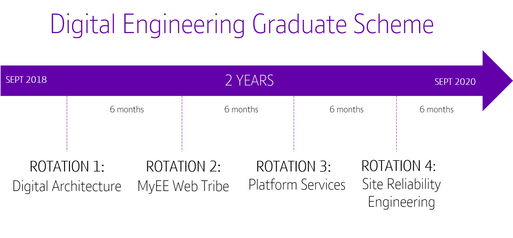
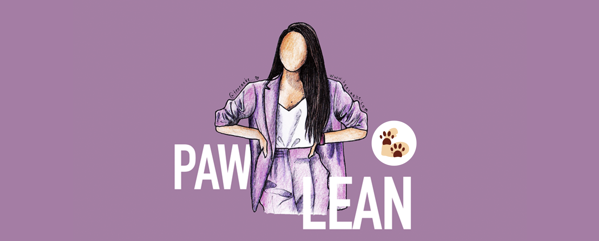

Hi, I'm Pauline.
People also call me Powerhouse.
To summarise, I am a...
People also call me Powerhouse.
To summarise, I am a...
I began learning to code for fun when I was 8 years old. I formed a hobby of building websites which carries on to this day - continuing to bring my ideas to life by playing around with pixels on the internet. Taking my love for technology and learning further, I took to the Clouds and became an AWS Certified Cloud Practitioner in November 2019.
I am familiar with:
In September 2018, I joined BT's exciting Graduate Scheme working in the Digital Engineering team. Lasting 2 years, this development programme allows four 6 month long rotations across the different delivery teams within BT Consumer Digital.
Read about the start of my Graduate Development here. You can also follow along my journey at BT here.
PROJECTS
Passionate about creating a better environment for future engineers, I actively work with communities to help bridge the inequalities in the tech industry, focusing speficially on females and people of colour representation. For over 3 years, I've proudly worked with Code First: Girls to deliver coding community courses for young women.
With diversity and inclusion at the core of my community work, I pioneered the first Women in Tech student community in Sheffield. Also, as part of the MedTech Sheffield committee, I led in bringing students from different backgrounds together to events, workshops and hackathons.
In addition, in my role at BT, I am a part of the Gender Equality Network (GEN) where I regularly push initiatives at our Leeds base. I have also been involved in the furtHER program as a mentor to upskill young women into joining the industry.
COMMUNITY PROJECTS
 Computer Weekly 2109
Computer Weekly 2109 Bold For Change x #shefcodefirst
Bold For Change x #shefcodefirstKEY CONTRIBUTIONS
‣ March 2016: Introducing CFG students to the hackathon scene
and the wider Women in Tech community.
‣ Feb 2017: Collaboration with HackSheffield to take over 20 CFG students to the InspireWIT conference.
‣ April 2018: Efforts in organising #HackMed18 saw an increase in attendance of women (47%) and students from different backgrounds including Humanities, Finance and Arts.
‣ March 2019: For International Women's Day, I organised an event at the BT office in Leeds with local Yorkshire speakers in the tech community which was shared and highlighted by BT Consumer's CEO, Marc Allera.
13 years ago, I started writing on the web.
My blog has evolved over time, I now write about reflections of my experiences for both my self development journey as well as daily adventures in life.
Examples of the topics I cover include monthly reflections, equality in STEM, well-being, and building your online presence. I regularly collaborate with different brands, people and companies. A full list of topics can be found here.
Drawing by Teecaake and logo by Matt Burman to represent Pawlean online
I also also started branching out into YouTube and have worked with different people on communicating messages across to my global auidence.
Working on my blog has allowed me to develop skills in:
PROJECTS
In 2017, I started speaking at events to help inspire others to reach for the stars in their career and beyond.
...from the University of Sheffield where I obtained my undergraduate degree in BSc (Hons) Biomedical Sciences with Employment Experience.
My Employment Experience Year was at the University in a Communications and External Engagement role. Although the placement was not a typical one to be taken by BMS students, I learned a lot from the 12 months. My contribution over the year, led me to be selected as a Finalist for "Best Intern" at the National Employability Awards 2018.
Inspired by my placement, I always encourage students to not let their degree restrict them to what they can do and go beyond! Because of this philosophy, I took on several roles such as student vlogger, enterprise intern and remote developer during my time at university.
VIDEO PROJECTS
 MLH Hackathons
MLH HackathonsCURRENT
PREVIOUS
Thanks to YOU @paulienuh for inspiring me every time I checkout twitter. You're an absolute power house & role model to many! 💎🎉
— Charlotte Fereday (@CharlotteBRF) June 3, 2017
Making a name for herself everywhere she goes, by working hard and overdelivering, always. 👌
— Matt Burman @ 🇬🇧 (@_mattburman) July 24, 2017
You are a force of nature @paulienuh! Unbelievable work this year. https://t.co/1ob0puN8IE
— UoS Placements (@UoSPlacements) August 11, 2017
One of the most inspiring action takers to follow 👇🏼👇🏼 https://t.co/wTNiiW4z8m
— Cam Adair (@camerondare) October 9, 2017
@paulienuh is epitome of awesome sauce. #rolemodel
— Tanja Lichtensteiger (@grappleshark) July 10, 2017
Having had the pleasure to work with the firecracker that is @paulienuh, I can safely say she is hurricane waiting to happen to the tech industry #pawleanforpresident. Watch this one, she will blow you away. https://t.co/aKy3IZDwJp
— Bryony Olney (@bryonyolney) April 9, 2018
It’s perfectly natural to feel overwhelmed, I am always here if you’d like to have a chat. Just remember that you are the most inspirational person in my life and I look up to you, especially with how well you cope with everything: you can get through this, too. I believe in you!
— Hadiyah Qureshi (@hadiyah_qureshi) 25 July 2018
Good stuff! You will go far in the industry if you keep all this up
— Jon Church 🍕 (@jonchurch) September 30, 2017
Some never find courage to be so open, but it makes all the diff 💯👏👍
I'm always looking to expand my network and connect with like-minded people. Let's connect!
I'm available for freelance work - I can help you develop your website, improve digital communications, and manage and grow your social media. I can also help out at your community events as a speaker or volunteer.
If you think we can work together or want to just have a chat,
you can get in touch with me below:
Email | @paulienuh | pnarvas
Find out more:
CV | Insights Profile | Blog | paulienuh